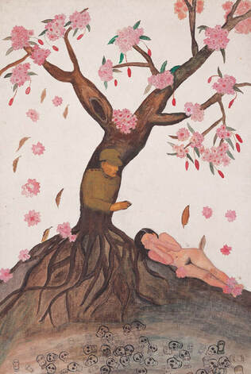

Comfort woman
It's been more than a year since I last wrote. I've been busy with life, but reading about the experiences of comfort woman prompted me to wrote again, as a form of processing. Where I live the topic is rarely discussed but it's important to me.
It's no hidden secret to those who know me personally that I adore Japanese architecture, the language, some of the anime and manga produced there, and various cultural bits. But the more I read about history outside of surface level stories, the more I feel conflicted on Japan and my own country.
Roughly once a year in one way or another, I end up on the wikipedia page on "comfort woman" link, called "troostmeisje" in Dutch or "ianfu" in Japanese. To summerize it, it's widescale brutal sexual slavery in asia during the second world war under imperial Japan.
Brutal doesn't do it justice, but I can't find another word. These woman are tricked into or kidnapped to serve in "comfort stations" (imprisonment camps) where they are tortured and electrically shocked into submission and raped by 10-20 men a day, 5-10 on the low end and sometimes 30-50 men when they came back from a battle. Some had swollen genitalia from infection yet were forced to continue, unheard in their pleas for help. They were forced to move from station to station and dehumanized as "public toilets" or "military supplies".
Through their physical abuse was over when the war ended in 1945, their voices weren't heard until in 1991 the brave Korean comfort woman Kim Hak-soon shared her story. Even so, many still haven't received recognition of their abuse. Many of the victims live in confusionist socities where a woman's purity is valued above their lives, thus they had to live in shame and poverty.

Kang Duk-kyung - Stolen Innocence
In Germany, my neighbouring country, their anti-war sentiment and education on the atrocities means they remember and are less likely to repeat history. In my country, the Netherlands, we're taught both in elementary school and highschool the horrors of the second world war and slavery, to ensure it isn't erased from public conscious. The Dutch government formaliy apologized for our history of slavery in 2022 and made amendments to the people in Java earlier. Sadly I can't find apology to the treatment of Moluccans, which is shameful in my opinion.
This is where I take issue with Japan; it refuses to formally apologize and take proper responsibility of it's warcrimes, and refuses to teach their own citizens of this past. It is far more egregious since there are still former Korean and possibly Chinese comfort woman alive to this day, and yet not given the honours and recognition they deserve. A society that doesn't remember it's past is doomed to repeat it's failures.